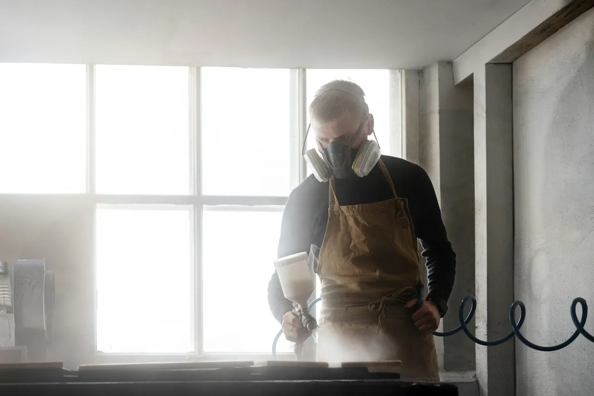

If your AC brings a musty smell with it every time it kicks on, mold inside the ductwork is a likely cause. We remove it and sanitize the system so it stops circulating through your home.

Duct mold removal in San Antonio targets mold growth that’s taken hold inside supply or return ductwork, usually where humidity and a slow-moving airstream give it a place to grow. It’s an add-on to standard air duct cleaning — we clean, treat and sanitize the affected sections so spores stop getting pushed through your home every time the AC cycles on.
After the standard cleaning and debris extraction, we apply an EPA-registered antimicrobial treatment to affected duct sections to kill remaining mold and inhibit regrowth. For heavier growth, we may need to access and treat sections of ductwork directly rather than relying on the treatment alone, and we’ll always show you where the growth was found before starting.
The clearest sign is a musty odor that appears specifically when the AC runs and goes away when it’s off. Visible dark or greenish spotting around a supply register, a known history of a condensate drain backup or roof leak near ductwork, or allergy symptoms that flare up indoors and ease outdoors are all reasons to get the ducts inspected for mold.
Mold needs moisture, and ductwork picks up moisture from a few common sources: condensation forming on ducts that run through a humid attic space, a clogged or poorly sloped condensate drain line backing up near the air handler, or a roof or plumbing leak that reaches the ductwork. San Antonio’s humid summer stretches make attic condensation more likely on ducts with damaged or missing insulation, which is one reason we always check duct insulation condition during a mold-related inspection.
Duct mold removal is priced as an add-on to standard duct cleaning, typically $150 to $300 on top of the base cleaning cost. The main factors are how many sections of ductwork show growth, whether the mold is limited to a small area or spread through multiple branch lines, and whether we also need to address an underlying moisture source like a condensate drain issue.
If there’s no musty odor, no visible spotting, and no history of moisture issues near the ducts, a standard cleaning without the sanitizing treatment is usually sufficient. If any of those signs are present, we recommend adding the sanitizing step, since standard cleaning alone removes debris but doesn’t necessarily kill mold that’s already established on the duct surface. We’ll tell you plainly which situation applies to your home rather than upselling the add-on by default.
The most common sign is a musty smell that shows up specifically when the AC is running and fades when it’s off. Visible dark spots around supply registers, worsening allergy symptoms indoors, or a known history of water intrusion or a condensate leak near the air handler are also strong indicators.
Duct mold removal and sanitizing is priced as an add-on to standard duct cleaning and typically runs $150 to $300 on top of the base cleaning cost, depending on how widespread the mold is and how many sections of ductwork are affected.
Mold spores circulating through ductwork can trigger or worsen allergy and asthma symptoms, and some people are more sensitive to mold exposure than others. It’s not usually an emergency, but it’s worth addressing once you’ve confirmed it, especially in a household with young children, older adults, or anyone with a respiratory condition.
Cleaning and sanitizing removes existing mold, but if there’s an underlying moisture source — like a condensate drain that isn’t draining properly or a leak in the ductwork — the mold can come back unless that source gets fixed too. We’ll flag any moisture issue we find so it can be addressed alongside the cleaning.